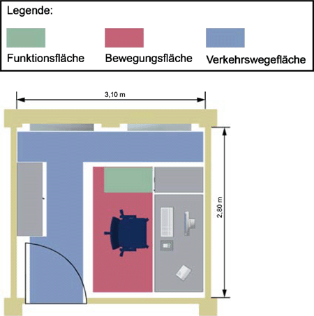
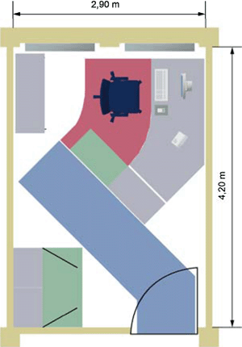
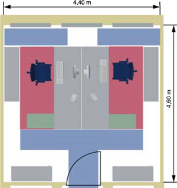
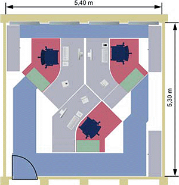
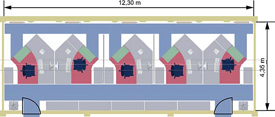
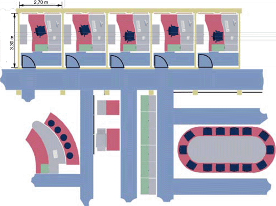
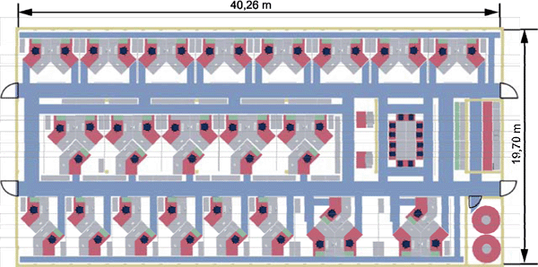

Abb. 13: Zellenbüro/Einzelbüro Beispiel 1 (Quelle: VBG Hamburg [www.vbg.de])
Beispiel für ein Zellenbüro (Einzelbüros entlang der Fassade angeordnet und über einen gemeinsamen Flur zugänglich) jeweils mit Sitz-/Steharbeitstisch, Rollcontainer in Arbeitstischhöhe und Schiebetürenschrank
Flächenbedarf pro Arbeitsplatz: 8,68 m²

Abb. 14: Zellenbüro/Einzelbüro Beispiel 2 (Quelle: VBG Hamburg [www.vbg.de])
Beispiel für heute übliche Büroarbeit (Kombination zwischen Bildschirmarbeit und "klassischer" Bürotätigkeit)
Flächenbedarf pro Arbeitsplatz: 12,18 m²

Abb. 15: Zwei-Personen-Büro (Quelle: VBG Hamburg [www.vbg.de])
Beispiel für ein Zwei-Personen-Büro jeweils mit Sitz-/Steharbeitstisch, Rollcontainer in Arbeitstischhöhe, Regalen und Schiebetürenschränken
Flächenbedarf pro Arbeitsplatz: 10,12 m²

Abb. 16: Drei-Personen-Büro (Quelle: VBG Hamburg [www.vbg.de])
In diesem Beispiel bestand die Notwendigkeit, ein Zweipersonenbüro mit einem dritten Arbeitsplatz auszustatten. Durch den Austausch alter CRT-Monitore durch moderne LCD-Bildschirme konnte die Arbeitsplatztiefe von 1000 auf 800 mm verringert werden. Auch konnte auf Flügeltürenschränke durch die inzwischen üblichen ONLINE-Dokumente verzichtet werden.
Flächenbedarf pro Arbeitsplatz: 9,54 m²

Abb. 17: Gruppenbüro (Quelle: VBG Hamburg [www.vbg.de])
Die Ausstattung in diesem Gruppenbüro beschränkt sich auf Arbeitstisch mit Freiformplatte, Rollcontainer am Arbeitstisch, Querrollladenschrank und Schiebetürenschränken zur gemeinsamen Nutzung.
Flächenbedarf pro Arbeitsplatz: 10,70 m²

Abb. 18: Kombibüro (Quelle: VBG Hamburg [www.vbg.de])
Das Kombibüro in diesem Beispiel nimmt insgesamt viel Grundfläche pro Arbeitsplatz in Anspruch, jedoch ist der "individuelle" Flächenbedarf pro Einzelbürozelle (Arbeitstisch, Rollcontainer, Schiebetürenschrank) relativ gering.
Flächenbedarf pro Arbeitsplatz: 8,91 m²

Abb. 19: Großraumbüro (Quelle: VBG Hamburg [www.vbg.de])
In diesem Beispiel eines Großraumbüros sind die Arbeitsplätze ausgestattet mit Arbeitstischen, Rollcontainern, persönlichen Schiebetürenschränken und Schiebetürenschränken zur gemeinsamen Nutzung. Außerdem sind Funktionsflächen wie Besprechungsraum, Teeküche und Kommunikationsraum berücksichtigt.
Flächenbedarf pro Arbeitsplatz: 16,18 m²